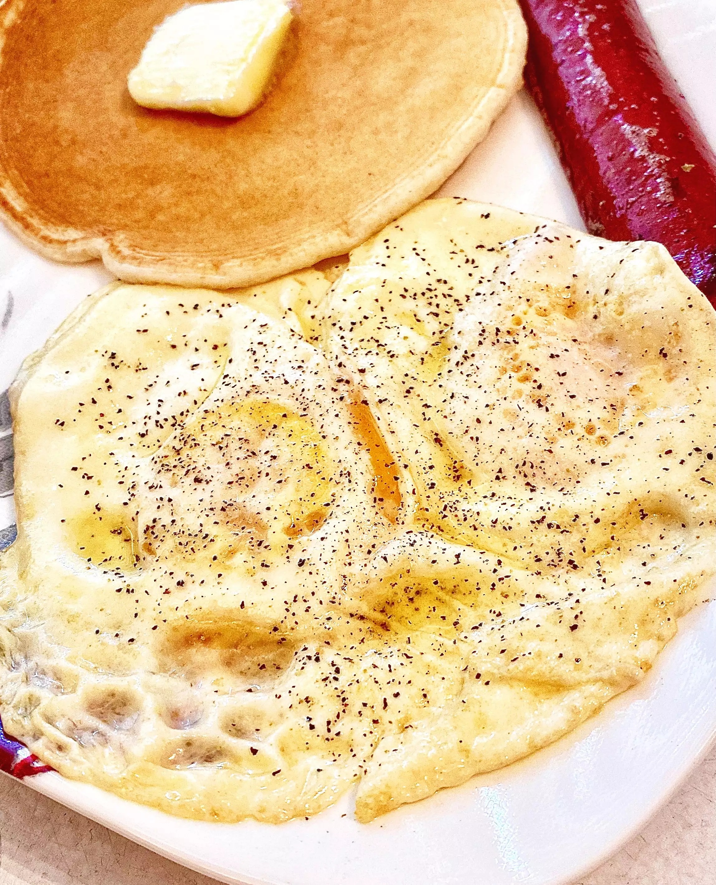

Eggs recipe

Description
Ingridiants
- 1 tablespoon butter
- 2 large eggs
- salt and ground black pepper to taste
Steps
- Melt butter in an 8-inch nonstick pan over medium heat. Once butter is melted, crack eggs into the pan. Tilt pan to evenly distribute eggs. Cook until whites are no longer translucent, 1 to 2 minutes. Flip eggs by pushing the pan away from you and slightly tossing eggs up and over. Move pan upwards to catch eggs.
- Cook on second side until desired doneness, 30 to 45 seconds. Season with salt and pepper.